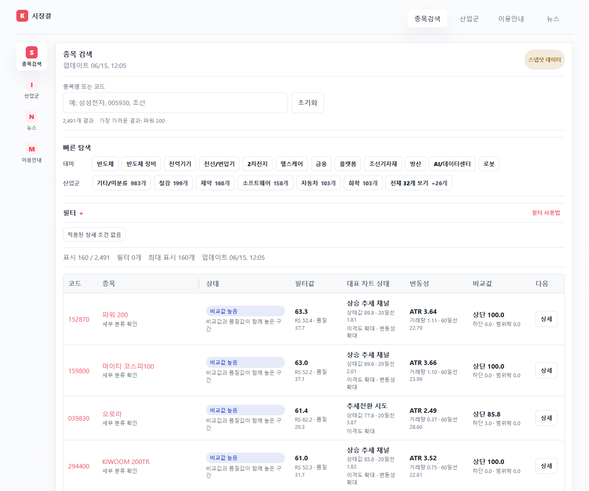
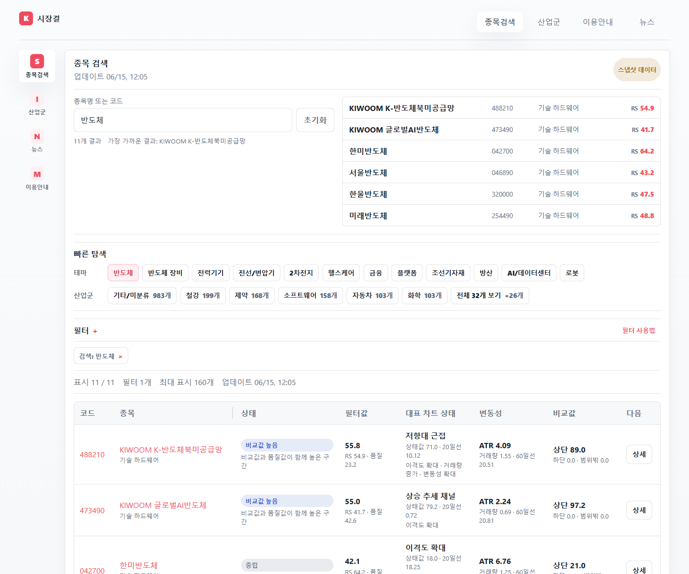

검색어, 테마와 산업군 필터, 비교 표, 상세 차트를 한 흐름으로 연결했습니다. 사용자는 설치 없이 접속해 후보를 좁히고 차트와 필터 근거를 확인할 수 있습니다.
Screen evidence
Approach에서 정리한 탐색 순서가 화면에서 어떻게 이어지는지 검색 시작점부터 비교 결과, 상세 차트 순서로 확인할 수 있습니다.
- 01 검색·탐색종목명이나 테마·산업군을 선택해 탐색을 시작하고, 다음 화면에서 이어 볼 기준을 만듭니다.
- 02 조건·비교필터와 quick filter를 적용해 후보를 좁힌 뒤, 같은 기준을 유지한 비교 표에서 결과를 확인합니다.
- 03 상세 검토상세 차트에서 가격 흐름·거래량·필터 근거를 함께 확인해 앞 단계의 선택을 다시 검토합니다.

